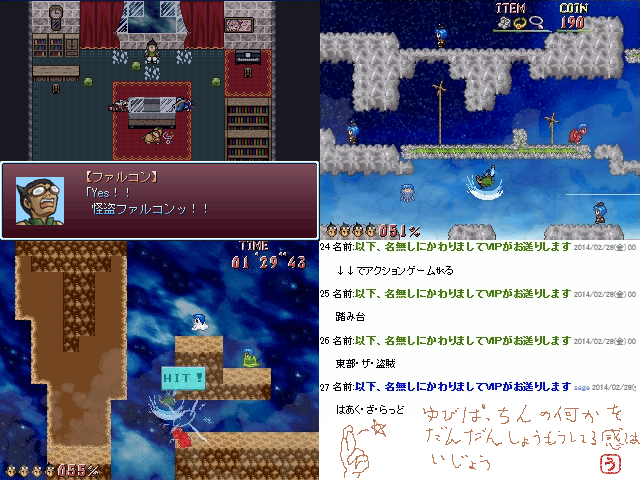

＜前の作品
≪TOPPAGE≫
次の作品＞
No.013 東部・ザ・盗賊

作者名：
最高にSMARTな作者コメント：
いつかのGW祭りにエントリーした安価ゲーをスマートに完成させたものです。
・攻撃＋ジャンプ操作のみのスマートなアクション
・プレイスタイルに合わせてスマートに遊べる「さくさく」と「じっくり」の難易度を用意
・メイン3ステージ＋エキストラステージのみと忙しい現代人に合わせたスマートな作り
使用ツクール：
作品配信許可：いい/動画公開許可：よ
ダウンロードする(18.7MB)
管理人コメント：
残機表示（？）と％表示でスマブラ的なものを想像した。ぬるぬる動きそう
↓この作品の感想を書く